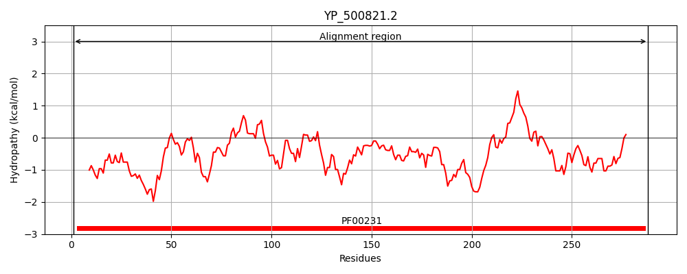
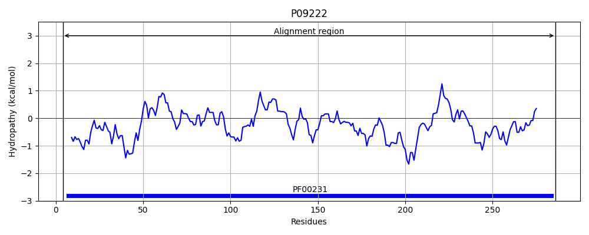
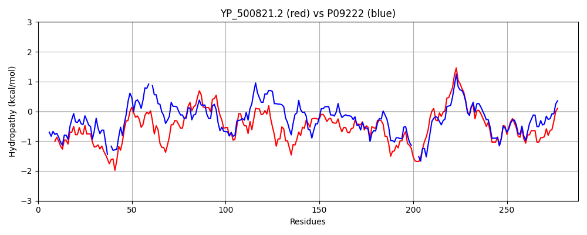

Hit Accession: P09222
Hit TCID: 3.A.2.1.14
Hit Description: gnl|BL_ORD_ID|8505 gnl|TC-DB|P09222|3.A.2.1.14 ATP synthase gamma chain OS=Bacillus sp. (strain PS3) OX=2334 GN=atpG PE=1 SV=1
Mach Len: 288
e:0.000000
Query TMS Count : 0
Hit TMS Count: 0
TMS-Overlap Score: 0.000000
Predicted Substrates:CHEBI:5584;hydron
BLAST Alignment:
Score: 742 , Bit scores: 290 bits, E-value: 1.7e-98, Alignment length: 288, Percentage identity: 52
Query: 1 MASLKEIDTRIKSTKKMKQITKAMNMVSSSKLRRAEKNTKQFTPYMDKMQDAITAVAGASSNTNHPMLRPRKITRSGYLVITSDKGLAGAYSANVLKKLITDIEAKHQDSSEYSIVVLGQQGVDFLKNRGYDIEYSQVDVPDQPSFKSVQALANHAIDLYSEEEIDELNIYYSHYVSVLENKPTSRQVLPLSQEDSSKGHGHLSSYEFEPDKESILSVILPQYVESLIYGTILDAKASEHATRMTAMKNATDNATELIDDLSLEYNRARQAEITQQITEIVGGSAALE 288
+ASL++I TRI +TKK QITKAM MV +SKL RAEK + PYM+K+Q+ + VA A+ +HPML R + ++GYLVITSD+GLAGAY++NVL+ + I+ +H EY+I+V+G+ G+ F + R + +PDQPSF ++ +A + L+++ DEL +YY+HYVS ++ + T R++LPL+ +K + YEFEP +E IL V+LPQY ESLIYG +LDAKASEHA RMTAMKNATDNA ELI L+L YNRARQA ITQ+ITEIV G+ AL+
Sbjct: 4 LASLRDIKTRINATKKTSQITKAMEMVLTSKLNRAEKR-EIVRPYMEKIQEVVANVALAA-RASHPMLVSRPVKKTGYLVITSDRGLAGAYNSNVLRLVYQTIQKRHASPDEYAIIVIGRVGLSFFRKRNMPVILDITRLPDQPSFADIKEIARKTVGLFADGTFDELYMYYNHYVSAIQQEVTERKLLPLTDLAENKQR---TVYEFEPSQEEILDVLLPQYAESLIYGALLDAKASEHAARMTAMKNATDNANELIRTLTLSYNRARQAAITQEITEIVAGANALQ 286 | Protein Hydropathy Plots: |
|---|
|  |  |
Pairwise Alignment-Hydropathy Plot:
|
|---|
|  |